WE HAVE THE FOLLOWING LENSES AVAILABLE AT OUR STORE
Single Vision Lenses: These lenses have a single prescription power and are used to correct nearsightedness
(myopia), farsightedness (hyperopia), or astigmatism. They have the same prescription throughout the entire lens.
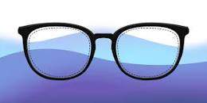
Single vision Black Plastic Ksh 1200
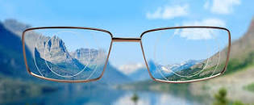
Single vision Thin frame Ksh 3100
Bifocal Lenses: Bifocals have two distinct optical powers in a single lens. The upper part corrects distance vision,
while the lower part corrects near vision. They are often used by people with presbyopia, a condition that affects near
vision as people age.
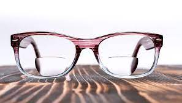
Bifocal lens Normal lens Ksh 2000
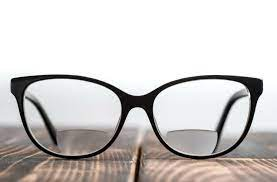
Bifocal lens Black frame Ksh 2800
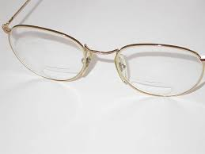
Bifocal lens Thin-half frame Ksh 2800
Bifocal lens Black frame-thick Ksh 3300
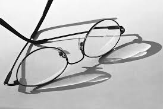
Bifocal lens Thin-black frame Ksh 2800
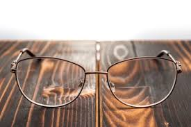
Bifocal lens Premium Ksh 5200
Photochromic Lenses: These lenses darken in response to UV light exposure and become clear indoors. Popular brand names
include Transitions and PhotoGray.
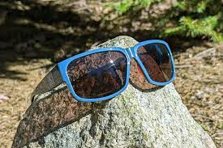
Photochronic lens Normal Ksh 1400
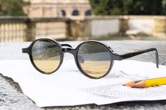
Photochronic lens Circular 1 Ksh 3000
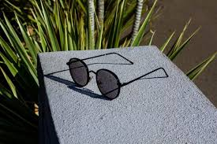
Photochronic lens Circular 2 Ksh 3400
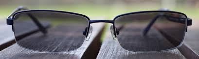
Photochronic lens Rectangular Ksh 6100
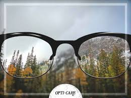
Photochronic lens Colourless lens Ksh 4299
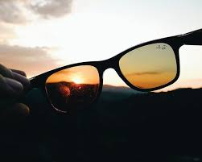
Photochronic lens Brown lens Ksh 2611
High-Index Lenses: High-index lenses are thinner and lighter than regular lenses. They are often used for strong
prescriptions to reduce the thickness and weight of the lenses.